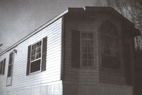
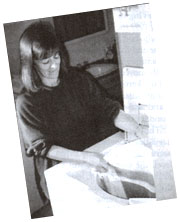
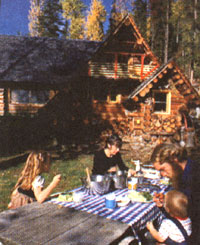
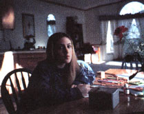
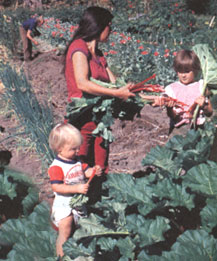
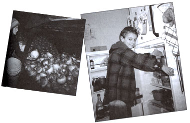
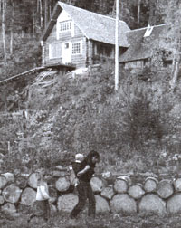
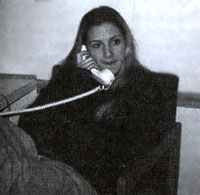

Leaving the Dream
Old habits die hard away from the wilderness.
In issue #127 [Aug/Sept, 1991], Deanna Kawatski told the remarkable story of her family's homestead in Northwest British Columbia. Three miles from the nearest road and one hundred from the nearest town, she married, had two children, and lived the life we've only dreamed of. Now she offers an equally moving sequel, in which she details how Paradise was lost. . . and found again amid the bustle of community life.
For 13 years we had been leading a self-reliant life-style deep in the Coast Mountains of northern British Columbia, growing all of our own food and living in almost complete isolation. Everything suddenly changed the day my husband, Jay, departed with our kids for a six-week vacation in Wisconsin. Before he left, he presented me with a letter that stated, in effect, that our marriage was over.
Occupying my time with decision making helped me deal with my feelings of great loss and hurt. I decided that I would be the one to leave the bush. So I made plans for the move, as well as arrangements to pick up the children, Ben and Natalia, at the airport upon their vacation return. Unfortunately, the decisive acts couldn't diminish the grief I felt while moving through my cycle of chores. I fed the chickens, collected the eggs, tended the giant garden, gathered clover in the field, and carted it to the rabbits. In the evening, I sat on the front porch breathing in the clearing and ebony spruce spires, knowing that I would have to leave it soon.
My mother and sister, Donna, drove 1,000 miles north from the Shushwap Lake region to retrieve me. Twenty-one boxes of belongings I felt I couldn't live without were lifted by helicopter from the Ningunsaw Valley and shipped south to Chase by transport truck. I also sent along the snowshoes, skis, and bikes.
As soon as the three of us entered the prominent northern town, I felt like a fish out of water. Certainly I had made trips out of the wilderness, but they averaged once every three months. Town was Stewart, with a population of 1,800 during boon times and substantially less during the bust spells. There were no shopping malls, no theaters, no McDonald's. It was a mere one-bank, one-department-store town, with a post office the size of an envelope. This new town had all of the above and more, and when we walked into a motel located on the highway, I wanted to turn and flee.
The next day the three of us happily greeted Ben and Natalia, fresh off the B.C. Air flight, and drove on to a motel in Williams Lake. Natalia realized for the first time that night that our stay away from the Ningunsaw Valley would be for longer than a couple of weeks, and she began to cry for her home. She missed the mountains and her animals. My biggest problem was the noise. Although I wore earplugs, I couldn't sleep with the racket of trains, traffic, and sirens.
Initially we searched for a place to rent in nearby Chase, and were aghast at the prices. It took more to buy less, and it was a real shock to go from living on $3,000 to $5,000 per year to $1,300 per month simply for food and shelter. In the woods, weeks could pass without having to handle money, or even think much about it. Suddenly it was a perpetual concern.
For the first time, feeding my family became a major adjustment. In the bush we trudged to the garden, root cellar, or cupboards for nearly everything, and did, in fact, produce 75% of our food self-sufficiently. Suddenly every item had to be purchased. At the supermarket I would pick up and stare suspiciously at the polished produce, wondering about its age, its origin, and-for the purpose of preservation and eye appeal-to what degree it had been polluted. The amount of choice in this giant room was astounding, and I found myself practically paralyzed by indecision. Forty different brands of cereal: with high fiber and low fat; with low calorie but high sugar; with just sugar; with sugar, without fat but with raisins-on and on.
Overselection did have one built-in advantage, though. It hampered my ability to overconsume. And when it came to purchased products, I ended up applying one rule: Seek out the cheapest.
Due to my deep connection to the north Shushwap area-I had spent all of my summers here as a child-we decided to spend the winter here. As soon as we arrived, I felt like Rip Van Winkle. Shuswap Lake had been home to my family for five generations, and its original 160 acres had dwindled down to two acres. It had also changed from a distinctly pastoral location with tinkling cowbells and rustling poplar leaves into a busy tourist haven. Miraculously, amidst the noise and emissions, the loons, ospreys, and mergansers still swoop and dive. As we searched for a place to rent, I was more concerned about the size of the yard and whether it contained trees than the house itself.
We finally settled on one, seven miles from my mother's property. Little did the owners know that I chose it because of the several acres of woods just east of it. Civilization had drastically altered my sense of space. Out in the wilderness I felt huge but was constantly reminded of my own insignificance. There were trees that were older, animals wiser. Back in civilization I felt mentally, physically, and spiritually crowded.
The house that we rented was a furnished two-bedroom duplex. Ben and I shared a bedroom while Natalia had her own. The downstairs remained unoccupied. Large windows and a deck overlooked Shushwap Lake, and the glow of the fireplace fed our primal spirits and offered us consolation.
And yet how radically different a typical day in the wilderness had been from a day in civilization. In the woods our alarm clock was the crow of King, our rooster. This signaled it was time to begin the first task: starting a fire in our wood cook stove and simmering the cereal, often homemade from our own wheat. A brisk trip down the hill to the outhouse offered a revitalizing (torturous in winter) tonic of fresh air and view of Natty Creek. The pos sibility of spying a wolf or moose always lingered. On the walk back, I would reenter our log home only after grabbing a hefty armload of birch and spruce for the stove. Then I'd put the morning meal on the table.
Here in our rented house, the propane heat was summoned at a touch of the thermostat. The initial blast of air through the vents sent shivers up my spine. Despite my nagging at breakfast time, the kids rejected the time-consuming homemade cereal from the bush for a quick bowl of sugary cereal doused with milk. In the same sense, I was impressed by the speed of the electric stove. (A couple of sheets of burned cookies smartened me up on just how fast it does heat up.) Here in the modern world there was no steep side hill to negotiate to get to the bathroom, which was warm and cozy. A fan-which went on simultaneously with the light-was a surprising indulgence. The efficient flush of the toilet seemed magical to me-until Ben dropped a pen down it to see what would happen and plugged the whole works.
MISSING COUNTRY SILENCE
My biggest problem at first was the noise. I couldn't sleep with the racket of trains, traffic, and sirens.
Physically I hadn't had it easier in years. Back in the bush there had always been wood to chop, bread to bake, rabbits to feed, grain to grind, school to teach, and floors to sweep. Here I felt out of my element maneuvering a whining vacuum cleaner across my carpeted living space, and I often wore earplugs to cope with the racket. Still, compared to my bush house, which also served as a toolshed, woodworking shop, school, and food-processing plant, this one was tremendously easy to keep clean. It was no longer necessary for me to cook three meals from scratch a day; I found that, as a family of three, we ate substantially less.
The only wood I had to chop or pack was for the fireplace, and after 11 years of hand washing, having an automatic washer and dryer was sheer fun. I noticed on my daily walks to the post office (this felt like real freedom after waiting one month to six weeks between trips for mail in the bush) how each dryer vent from the houses beside the road exhaled the same smell of fabric softener. In civilization, everyone's laundry smelled the same. In the bush, my clothes came off the line permeated with the smell of wind and rain. The modern convenience I had the most difficulty adjusting to was the television set, and eventually I threw it out in favor of expanding our bookshelf.
For Natalia and Ben, the most radical change was attending public school after having been home schooled their whole lives. Suddenly they were forced to ignore their impulses; their lives became governed by clocks and schedules. In modern society, children are fitted into the tight harness of someone else's schedule. Constant diversions and a whirl of activity quickly become their reality. In the bush, our lives moved with the cadence of the seasons. I'm left wondering when people ever have a chance to grow and cultivate the gardens of creative thought that lead to invention.
On the first morning of school, I walked my children a half-mile up the road to the bus stop. I felt guilty about handing them over to the public system. However, I had given them the choice, and both were eager to make friends. This wasn't so easy. Ben cried on the first day and developed a stutter, which has thankfully subsided.
To our dismay, Nat's greatest fear materialized. At the outset she was completely rejected by her classmates. However, her independent learning proved to be an asset. She remained conscientious about her work and ended up winning the academic achievement award, bestowed annually on one student in the graduating class.
Fortunately, the North Shushwap Elementary School is a good one, and a caring staff encourages parental participation. Last year I helped with various activities, including the cross-country ski club. And Natalia had the chance to learn to play the clarinet. Eventually, she was accepted by the class, but it was mainly the required conformity above all else. Quietly, I watched the changes. In the bush practicality and comfort ruled and the kids were content to wear cast-off clothing. Now brand names infiltrate their psyches, and the frequent requests for fancy items puts a strain on my brain and budget. Other strains included viruses. Within a few weeks both kids-who almost never got sick-were on antibiotics.
Despite the changes, I have found that old habits die hard. Regularly I refer to the bathroom as the outhouse, and to the compost bucket as the chicken bucket. One night I woke up to what I thought was the glacier-fed wind whistling down the valley, carrying with it the scent of wolf packs. I opened my eyes and realized that it was a noisy truck on the road below our rented abode. After years of living in the bush down a rough foot trail three miles from anything resembling a road, I resented the intrusion. And through my window, from across the street, shone my neighbor's light. Being from the city she didn't feel safe sleeping without it. At night I craved genuine darkness.
Despite, or perhaps because of, my longing for the Ningunsaw Valley, I would snowshoe regularly through the woods and across the nearby golf course, seeking out the deer beds. Still I found a new strength unfurling.
Moving to civilization gave me a chance to learn how much I could do on my own. In addition to working through the transition of households, I replaced the flat tires of Ben's bike, assembled a bookshelf, and fixed Natalia's door when she got locked out of her bedroom. I paid the bills and managed our affairs, and even though I didn't know how we were going to survive financially, I learned that I could be organized and efficient.
This past spring I started a small garden on my mother's property. It was virgin sod, which I turned by hand, not far from the spine of rock that my great grandmother had piled when she pioneered here in the early 1900s. With growing enthusiasm I planned the layout, and later harvested small but healthy crops of peas, potatoes, beets, tomatoes, cucumbers, bell peppers, and other delectables. The climate here is much more hospitable than in the north, where frost could occur at any time of year. And no longer are huckleberries our main winter fruit. Here the apple, plum, and pear trees flourish.
I see the concept of self-sufficiency in a slightly different light now. Our fiercely individualistic North American society has created a lot of lonely people. As much as we must learn independence, we must also learn interdependence. In the bush there was too much work for two people, and Jay and I both ended up feeling unappreciated by the other. I no longer see it as possible, or even desirable, to do everything on one's own-individually or as a family. We must work together. Still I continue to bake my own bread and to cook from scratch. I preserve produce for the winter, walk or bike when I can, and try to conserve more than consume.
One afternoon last spring, as I rode my bike home from the garden, I was chased by massive thunderheads. A fierce wind whipped branches across the road and churned the lake to a chartreuse mood reminiscent of summers past. Then the clouds released themselves in torrents of rain, which bounced off the fading road. In a flash I remembered that in nature, as well as in life, there is always room for the unexpected, and jubilantly I felt myself free and eager to venture on.
THE DOWNSIDE OF INDEPENDENCE
In the bush there was just too much work, and Jay and I both ended up feeling unappreciated.
|
 The washing machine was a true revelation. |
 A summer picnic at the old home in the wilderness. |
 Natalia in the living room, looking contemplative. |
|
 Natalia and Ben helping out in the garden at the old house. |
 Me in the root cellar in the bush, taking stock of what to cook for the evening. Ben using a much simpler approach for his dinner. |
 Taking care of chores, such as building a stockpile of wood for the long winters, was a constant occupation in the old house. |
|
 Now the phone vies for more and more of our time. |
 |
|